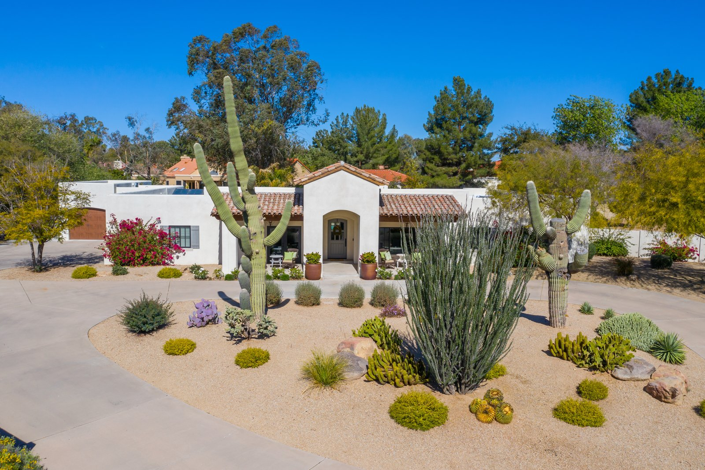

Shea Corridor & Cactus Corridor Real Estate: Homes and Lifestyle
Welcome to Shea Corridor & Cactus Corridor
Established streets, custom estates, and no cookie-cutter developmentWhat to Love
- Large lots with mature trees
- Custom architecture with little tract-home repetition
- Scottsdale Country Club and Shops at Gainey Village nearby
- Quick access to the McDowell Sonoran Preserve
What is the Shea Corridor known for?
The Shea Corridor is one of Scottsdale's most established residential areas, known for mature landscaping, larger lots, and a lack of cookie-cutter development. As the area continues north toward Shea Boulevard, the setting becomes more residential and less commercial than McCormick Ranch or Old Town.
Notable landmarks include Scottsdale Country Club, HonorHealth Scottsdale Shea Medical Center, and Scottsdale Quarter just to the north, which brings additional shopping and dining within a short drive.
What is the Cactus Corridor known for?
The Cactus Corridor is one of Scottsdale's most coveted luxury neighborhoods, known for large custom estates rather than master-planned tract development. Many homes sit on large lots with no HOA in many pockets of the area, giving the neighborhood a true estate feel while remaining minutes from shopping and dining.
Mature trees and horse properties are common, and custom architecture is the norm rather than the exception. Nearby landmarks include access to the McDowell Sonoran Preserve and the Shops at Gainey Village.
What should buyers know before purchasing in the Shea or Cactus Corridor?
Because many Cactus Corridor properties have no HOA, buyers should independently verify septic status and easement details rather than relying on a homeowners association for property standards.
Buyers drawn to horse properties or larger acreage should confirm current zoning and any equestrian-use restrictions with the City of Scottsdale before purchasing, since not every large parcel in the area is zoned for horses.
How does access to the McDowell Sonoran Preserve factor into the Cactus Corridor?
Several Cactus Corridor streets sit within a short drive of trailheads leading into the McDowell Sonoran Preserve, one of the largest urban preserves in the country. That proximity, combined with the area's larger lots and mature landscaping, is part of why the Cactus Corridor commands a premium over comparable square footage closer to Old Town.
The Shops at Gainey Village, just south of the Cactus Corridor, adds a walkable retail and dining option — including Village Tavern and Pomo Pizzeria — without requiring a drive into Old Town Scottsdale or North Scottsdale.
What golf is available in the Shea Corridor?
Scottsdale Country Club, in the Shea Corridor, traces its roots to a 1988 Arnold Palmer redesign and operated for several years as Starfire Golf Club before recently rebranding back to the Scottsdale Country Club name. It now features an 18-hole championship course alongside Six Shooter, a 10-hole short course — open to residents and visiting golfers rather than restricted to members.

Common Questions
Do Cactus Corridor homes have an HOA?
Many properties in the Cactus Corridor have no HOA, which is part of what distinguishes the area from master-planned Scottsdale communities. Buyers should confirm HOA status for a specific parcel, since it varies by street.
What is Scottsdale Country Club?
Scottsdale Country Club is a public golf facility in the Shea Corridor that was recently rebranded back to its original name. It offers an 18-hole championship course and Six Shooter, a 10-hole short course, and serves as one of the area's primary recreational anchors.
Are there horse properties in the Cactus Corridor?
Yes. The Cactus Corridor is known for large-lot properties, and horse properties are common, though zoning and equestrian-use rules should be verified for each specific parcel before purchasing.


Considering a Move to Shea Corridor & Cactus Corridor?
Call 480-734-0870 or email laura@laurajorden.com for current listings and market data.
Contact Laura